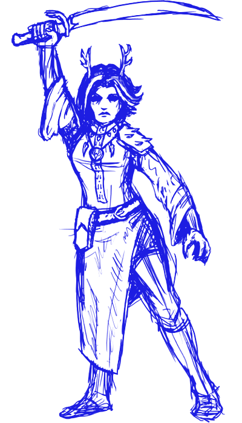

Ещё один заголовок H2 - для красоты
Вууу! Список:
- Вероятно, это пункт перечня со ссылкой на страницу гугла.Этот маленький текст тяжело читать
- Использованный шрифт — "Open Sans".Загружается напрямую от гугла
- Его можно заставить переливаться цветом
- Ссылки не должны быть грязно-синими или же грязно-фиолетовыми, как хочет браузер. Это привычно, но такой вот цвет выглядит лучше
H2, третий:
Почему нет?
- В списке можно вставлять маленькие картиночки
 в формате SVG - векторная графика хорошо растягивается и сжимается без артефактов
в формате SVG - векторная графика хорошо растягивается и сжимается без артефактов - Пункт списка внезапно заменяется на …
моноширинный текст - прямо в пункте списка. Он обычно используется для кода. Надо придумать, подо что и как его ввернуть в нашем случае
Ещё можно оформить цветовые штуки с помощью пред-символа: #0093aa, #77002b.
Картиночки! Обычные, не векторные

Агнес. Весьма мила
Картинка расположена слева от этого текста.
А сам текст форматируется справа от Агнес.
У, у, и цитатки тоже добавить!Ася про эту страничку
Сайт свиснут с the best motherfucking website, ибо у того лицензия WTFPL. Cit. needed